5' 10" · A dramatic torch-song singer, newly awakened and utterly theatrical, who treats every number like her grand debut; composed, regal and a little haughty. Tall, slender and rigidly upright with a long neck, squared shoulders and precise, bird-like angular gestures; never slouched, shambling or menacing. Her recognition cue is a very tall towering cylindrical mass of black hair rising well above the head, crimped and swept straight up, with two sharp white lightning-bolt streaks running from each temple up the sides of the tower — the tower is taller than her face is long and stays vertical in every view. Supporting cues are pale grey-lilac skin, a thin neat stitched seam under the jaw on the character-left side, dark dramatic brows, dark lips, and a long white column gown with long wrapped sleeves, all readable without facial detail. No hat, veil or headwear. She wears a long flowing white gown with wide wrapped gauze-like sleeves banded to the wrists, a high gathered neckline, and a skirt falling straight to the floor that hides her feet, cinched at the waist with a narrow pale silver sash. She holds one wireless handheld microphone upright in her character-right hand at chin height with a straight wrist and fingers held elegantly; no cord, no stand. Her ready stance is tall and poised, feet together beneath the gown, chin raised, the free character-left hand held out at waist height with fingers spread in a stiff theatrical flourish. Palette, as base/shadow/highlight per material: gown #ECE9E2 / #B3AEA4 / #FFFFFF; sash #A9ADB5 / #6D7079 / #D9DCE1; skin #C9C2CC / #8E8594 / #E6E0E8; hair #1B1A1E / #0B0B0D / #434148; hair streak #E8E6E1 / #B3B0AA / #FFFFFF; stitches #5A5360 / #36313A / #7C7482; lip #3E2238; metal #6F747C / #34383E / #B5BAC0; eye white #EFEDE6; eye dark #1B1A1E. Never draw: a hair tower that leans, flops, splits or shrinks below the height of her face; loose or shoulder-length hair; streaks in any colour but white; blood, gore, open wounds or bandages that read as injury; a veil, crown or headwear; a hissing, snarling or menacing face; zombie arms held straight out; visible feet, legs or a short hem; any real actor's likeness or any film's makeup design; the microphone in the character-left hand; a microphone cord, stand or duplicate microphone; logos, text or real brands.
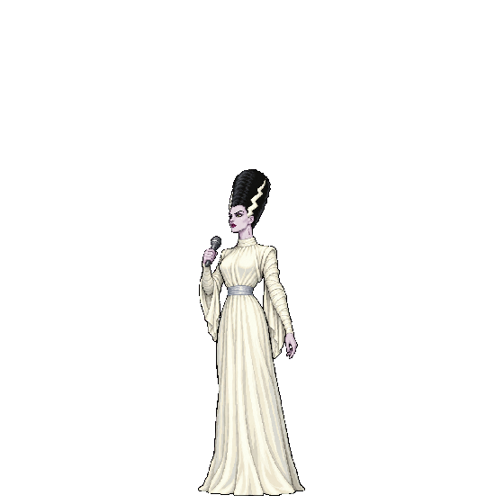
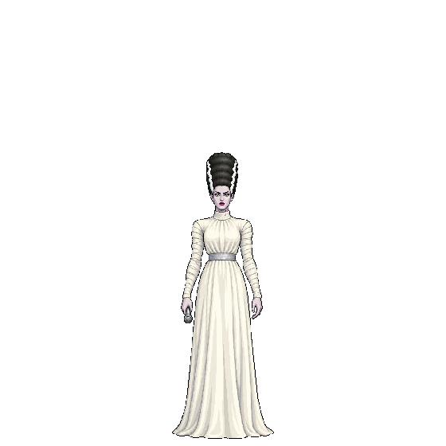
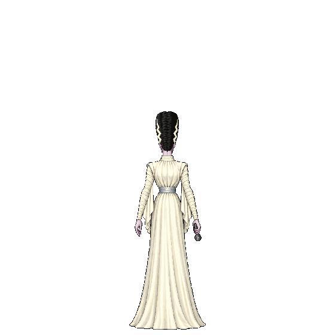
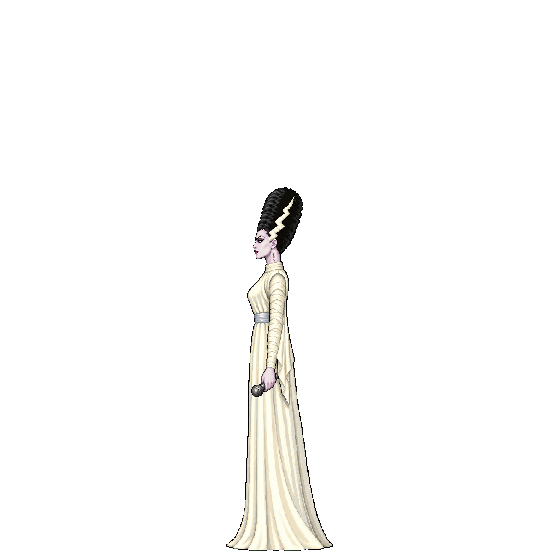
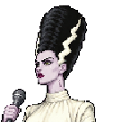
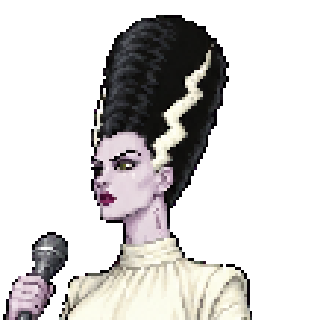
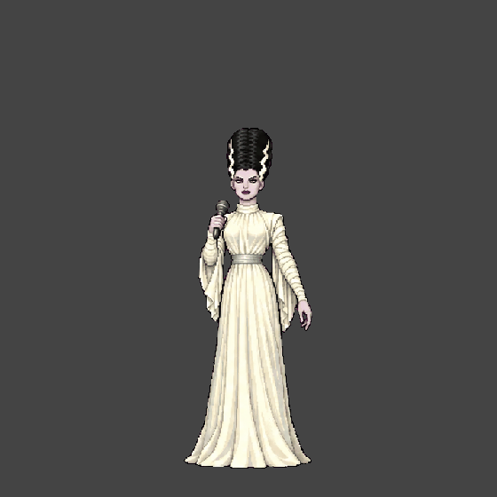
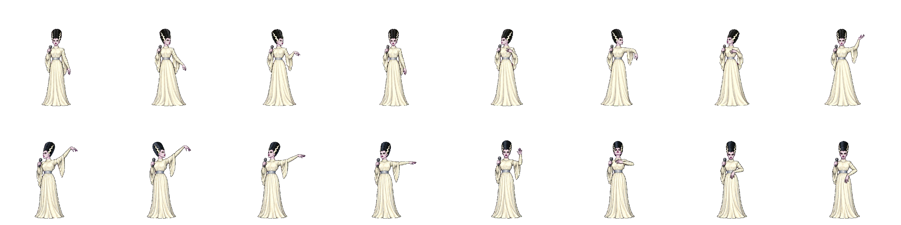
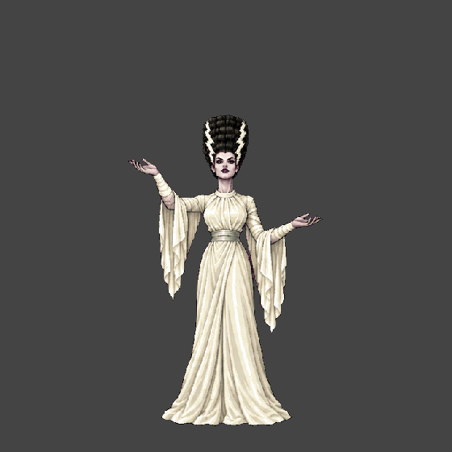
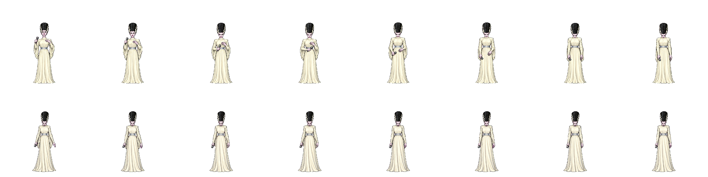
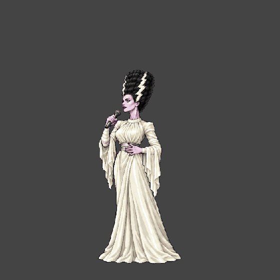
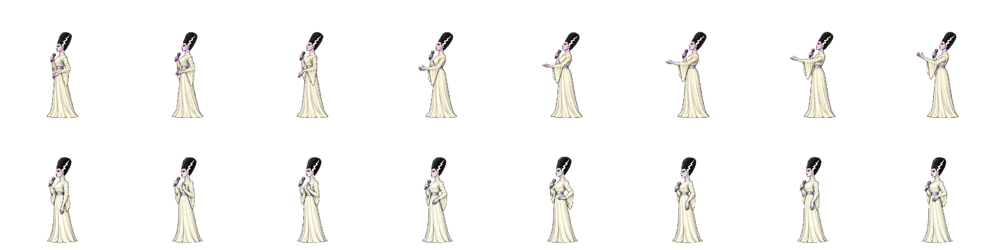
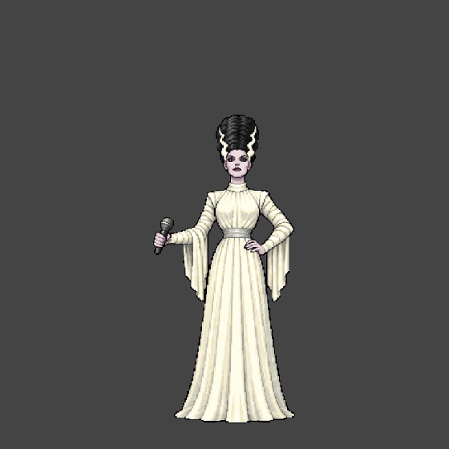
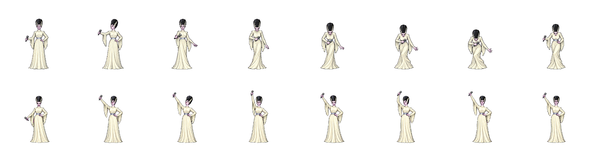